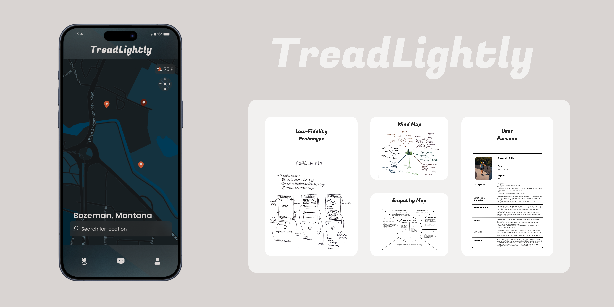
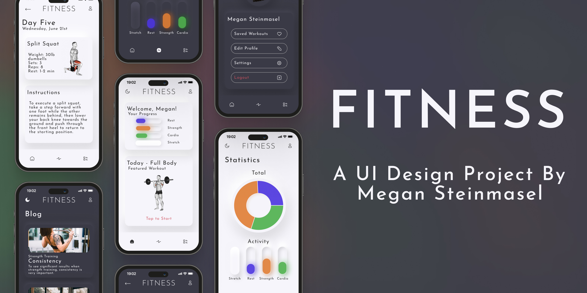
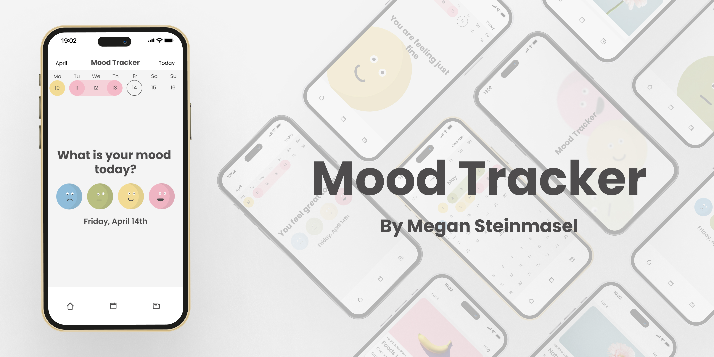
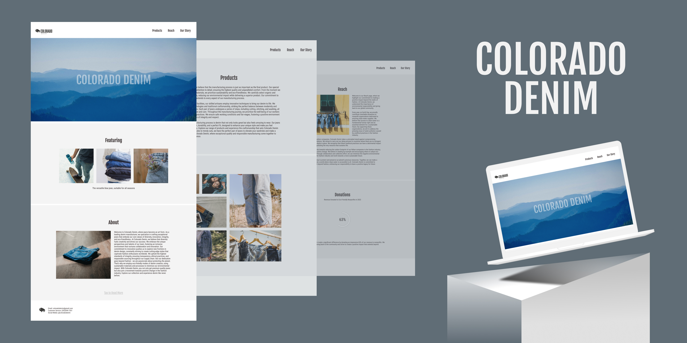

Hi there, I'm Megan! I'm a senior at Montana State University, majoring in Computer Science. My passions include UI/UX design, web development, and cybersecurity.
I am genuinely passionate about creating intuitive and visually appealing digital experiences that engage users. Moreover, I'm drawn to the challenge of safeguarding
information and systems. When I'm not coding or designing, you'll likely find me exploring the great outdoors, hiking local trails, and soaking up nature's beauty. I
also have a creative side and enjoy expressing myself through painting and drawing. Overall, I am a driven individual who thrives on the blend of technology and creativity.
Expierence
MSU Software Engineering & Cybersecurity Lab
Utilizing Snort, Wireshark, and Docker as tools in conducting research expierments and data collection.
Contribute Youth Startup
Helping create a crowdfunding WordPress website for a nonprofit organization that helps Monatana students in need.
Skills
Technical Skills
HTML, CSS, JavaScript, Java, C, C++, Python, React, Figma, Lucidchart, WordPress, Git, VIM, Adobe Illustrator
Certifications
Figma Certification: Beginner to Pro 2023, MSU Leadership Certification
Projects

UX Design Process: TreadLightly App
The TreadLightly App UX Project unfolds in five stages focusing on user-centric design:
1 - User Research and Empathy: Interviewing 5 participants.
2 - Persona Creation: Defining user needs and challenges.
3 - Ideation: Challenging assumptions using a mind map.
4 - Prototyping: Low-fidelity and high-fidelity prototypes.
5 - User Testing: Validate and refine the high-fidelity prototype.
To view the full process: UX Design Process

Visual Design: Fitness App
I developed a monochromatic and scalable design for the Fitness App. The design process I followed included:
1 - Developed a low-fidelity wireframe.
2 - Decided on colors, themes, and fonts.
3 - Went on to create a first iteration Figma prototype.
4 - Tested the first iteration prototype on gym-goers.
5 - Created a second iteration Figma prototype and changed the home page based on user feedback.
To view the full prototype: Fitness App

Mood Tracking App Design
The Mood Tracker app has a simple and colorful design that lets users easily track their daily moods. The app showcases three primary screens - home, calendar, and blog - enabling users to navigate seamlessly through their mood tracking journey, stay organized, and engage with insightful content.
To view the full prototype: Mood Tracker App

Sample Website Design: Colorado Denim
Colorado Denim is a sample web design site using HTML and CSS. The key components include:
1 - Consistent navigation and page links using the anchor tag and the href attribute.
2 - CSS styling with an external stylesheet using the link tag.
3 - Responsive design that adapts to different screen sizes.
To view the site: Colorado Denim
Activities

Computer Science Outreach Program
I was chosen to represent the MSU computer science program & teach kids about technology and problem solving!
LinkedIn post: World of Works

2023 Grace Hopper Conference
I am honored to of attended the 2023 Grace Hopper Conference in Orlando, Florida!
LinkedIn post: GHC23
Other Works

Forest & Wildflowers Painting
Oil on canvas painting featuring hues of green.

Flower Vase Painting
Rose painting using oil paints.

Snowy Mountain Painting
Pastel oil paintng of a snowy mountain at sunset.

Sunset Field Painting
Oil on canvas painting including warm toned colors.
Get In Touch
I would love to connect with you! Whether you have questions, collaboration opportunities, or just want to say hello, feel free to reach out to me via email. I'm excited to hear from you and discuss anything related to web design, web development, UI/UX design, or any other topic you'd like to explore together!
{kind=link}
{kind=link}
{kind=link}
{kind=link}